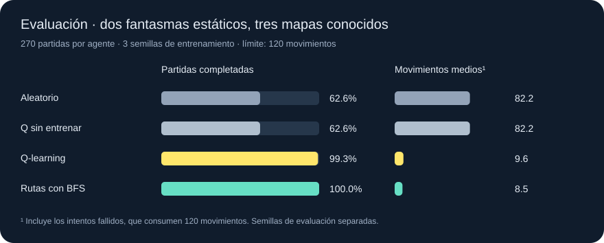

UN EXPERIMENTO DE APRENDIZAJE POR REFUERZO
Del azar a una
ruta aprendida.
Un agente aprende a capturar dos fantasmas visibles. Explora el laberinto, recibe recompensas y guarda lo aprendido en una tabla Q.
99,3%
partidas completadas con Q-learning
9,6
movimientos medios frente a 82,2 al azar
270
partidas de evaluación por agente
Observa lo que aprendió
REPRODUCCIÓN REALCÓMO SE HA MEDIDO
Aprender, congelar,
comparar.
Tres modelos independientes, 3.000 episodios de entrenamiento por modelo y 30 partidas de evaluación por mapa. La evaluación usa otras semillas y no modifica la tabla Q.
